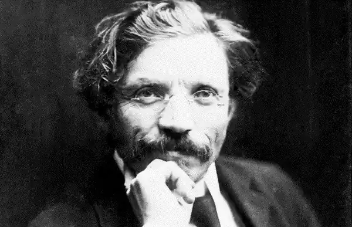
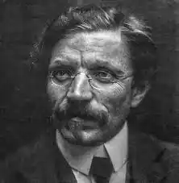
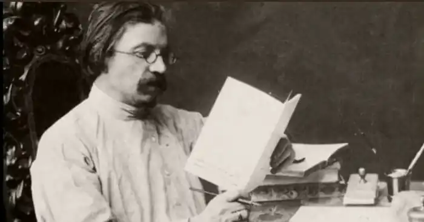

ШОЛОМ-АЛЕЙХЕМ
(1859-1916)
Злам століть для літератури на ідіш є часом її інтенсивного розвитку. Ще був творчо активний засновник критичного реалізму в новій європейській літературі, "дідусь єврейської літератури" Менделє Мохер-Сфорим (1836-1917); творив визнаний класик Іцхок-Лейбуш Перед (1851 —1915) — сміливий художник-новатор, який поновив традиційні для єврейської літератури жанри. Пафос його творчості 90-х років був спрямований проти пережитків середньовіччя, що так трималися в єврейському середовищі, а з початку 900-х років мотиви своєї творчості він пов'язує з неоромантичним рухом європейських літератур того часу. У 90-ті роки заявив про себе видатний поет Хаім-Нахман Бялик, який писав головним чином давньоєврейською мовою (івритом). У кращих епічних і ліричних творах він висловлював надії і сподівання сотриого народу. У них пролунав палкий заклик до боротьби проти національного гніту, проти байдужості, смиренності перед соціальною несправедливістю. Та найбільш помітне місце в єврейській літературі початку століття посідає Шолом Аш (1880— 1957). Його увагу насамперед привертає обездолена людина, але поряд з цим автор схиляється до ідеалізації патріархальних устоїв та релігійних традицій містечкового побуту. Література мовою ідіш у США виникла наприкінці XIX століття. Емігранти, які здебільшого були вихідцями з Росії, привнесли в літературу настрої, проблеми, пов'язані з життям своєї першої батьківщини. Гостра класова боротьба в епоху першої російської революції і поразка чорносотенної реакції знайшла багатогранне відображення в історії нової єврейської літератури. Вона наклала виразний відбиток на творчість її класиків — Менделє, Шолом-Алейхема, Переца, які висловлювали настрої широких демократичних верств нації, Визнаним лідером літератури мовою ідіш протягом майже чотирьох десятиліть залишався Шолом-Алейхем (Шолом Нохумович Рабинович); його псевдонім означає: "Мир вам!", і вибір . цього псевдоніма був невипадковим. Повісті, романи, оповідання й новели, п'єси й критичні статті Шолом-Алейхема ввійшли з посмішкою у кожний дім як слова привітання і доброзичливості, вони вчили людей сміятися навіть тоді, коли їм хотілося плакати. Його творчість ознаменувала розквіт критичного реалізму в єврейській літературі. Справді народна за своєю суттю, вона відрізнялася нездоланною вірою у творчі сили народу, перспективи його національного буття. Історичний оптимізм Шолом-Алейхема був неоцінимою рисою, особливо в роки, коли російське самодержавство насаджувало звірячий шовінізм, заохочувало чорну сотню, інспірувало кровопролитні погроми. Великий єврейський народний письменник народився 18 лютого (2 березня) 1859 року, в Україні, в місті Переяславі Полтавської губернії, в заможній сім'ї торговця і орендатора. Батько письменника був поважною людиною у місті. Він добре знав і любив біблійну і талмудичну літературу; у сім'ї додержувались всіх національних і релігійних звичаїв. Але водночас Рабинович був вільний від фанатизму. Він жваво цікавився світською культурою і просвітницькою літературою. Голова сім'ї мав м'який характер, любив свою сім'ю і особливо маленького Шолома. Згодом Шолом-Алейхем присвятив батькові чимало сторінок, написаних з великою любов'ю. Незабаром після народження Шолома родина Рабиновичів переїхала з Переяслава до містечка Воронково, що знаходилося неподалік, де й минуло дитинство письменника. У своїх творах він увічнив рідне містечко з узагальненою назвою Касрилівка (від поширеного в єврейському бідняцькому середовищі імені Касрил). Як усі діти єврейського містечка того часу, Шолом навчався у хедері — приватній напіврелігійній школі. В автобіографічному романі "З ярмарку" і в інших творах Шолом-Алейхем неодноразово згадував убогість і сумні умови "навчання" в цій майже середньовічній школі. Маленький Шолом вирізнявся серед інших учнів не тільки блискучою пам'яттю, допитливим розумом, але й жвавим характером. Його пустування було необразливим і зводилось головним чином до вдалого зображення тих чи інших недоліків дорослих. Побачивши когось уперше, він одразу завважував, що в ньому негаразд, і починав удавати його. У ранньому дитинстві Шолом цікавився казковим і фантастичним. Він потоваришував з хлопчиком Шуликом, великим майстром розповідати казки, що були одна за одну цікавішою. Майбутній письменник захоплювався і українськими народними переказами. Глибокий вплив на чутливу уяву хлопчика справили казки й легенди про "проклятого Мазепу", про Богдана Хмельницького, який забрав у поміщиків і багатих євреїв скарби, привіз їх у Воронково і одного разу вночі в місячному сяйві зарив глибоко в землю. Український колорит забарвлює творчість Шолом-Алейхема. На сторінках його творів можна знайти чудові картини української природи. Брат письменника Вольф Рабинович пише, що молодий Шолом-Алейхем "виявив великий інтерес до українського фольклору і української поезії", Із Софіївки Шолом привіз у 1879 році до Переяслава українські народні пісні і вірші Тараса Шевченка..., розповідав дива про Софіївку й про те, як вільно він почував себе на лоні прекрасної природи, де він часто крокував вузькою стежкою серед високого жита і співав пісні...пісні богом благословенного поета України Тараса Шевченка. Спочатку він заспівав пісню, яка особливо йому сподобалась, "Думи мої", потім "Реве та стогне Дніпр широкий", "Як умру, то поховайте" та інші пісні". "Коли я писав мої вірші,— розповідав Шолом-Алейхем,— я ... шукав "Кобзаря", цю пісню пісень Шевченка... Я ладен був віддати що завгодно і скільки завгодно..." Він назвав Шевченка Некрасовим України. Без сумніву, можна встановити близькість між гумором Шолом-Алейхема та українською класичною літературою, зокрема таких відомих у ті часи драматургів і комедіографів, як Старицький, Садовський, Кропивницький, Карпенко-Карий та інші. Батько Шолома вважався багатієм у Воронці: він поставляв буряки до заводу, орендував земську пошту, вів торгівлю зерном, мав лавку. Та матеріальне становище родини ставало все гіршим; прибутки падали. У пошуках кращих заробітків родина Рабиновичів знову переїздить до Переяслава, де вони відкривають заїжджий дім. І Шолому, як і іншим дітям, доводилося закликати в дім приїжджих, перед якими треба було підлещуватись. Це було принизливо і зовсім не відповідало солодким казковим мріям про скарб, принців та принцес, про кришталеві палаци. Доля родини Рабиновичів була типовою для більшості єврейського населення в царській Росії. Царський уряд встановив для євреїв "межу осілості", певні губернії, за межами яких їм було заборонено жити. Євреям заборонялася служба в державних закладах; заборона жити в селах позбавляла євреїв можливості займатися сільським господарством, заборона жити в містах — працювати в промисловості, на транспорті; у вищих і середніх навчальних закладах була встановлена славнозвісна "відсоткова норма" для євреїв, там мали можливість вчитися лише діти багатіїв Шолом-Алейхем з дитинства в родині і в містечку бачив тяжке становище народних мас, і він став співцем народного горя. У Переяславі Шолом продовжував своє навчання в хедері. У 1872 році померла від холери мати Шолома Хає-Естер. Це було великим ударом для родини Рабиновичів. Маленька й в усьому покірна своєму чоловікові, ця жінка своєю енергією і невтомною працею підтримувала порядок і певний ритм життя в домівці. Батько зовсім розгубився. Дітей довелося відправити до міста Богуслав до дідуся й бабусі. Тим часом батько оженився вдруге. Повернувшись, діти зустріли нову господиню — мачуху. Вона була жінкою сварливою, в домівці завжди чувся нескінченний потік її лайок і проклять. Спостережливий Шолом зацікавився "мовною стихією" мачухи, він почав, за алфавітом, записувати всі її лайки і створив щось на зразок словника. Батько випадково прочитав ці записи і схвалив їх. В автобіографічному творі "З ярмарку" Шолом-Алейхем згадував про них як про перший "літературний твір". У хедері Шолом познайомився з творами Авраама Maпy і під впливом цього письменника-просвітника почав писати свій власний роман. Хоча роман був наслідувального характеру, проте він мав успіх у батька та його друзів. У зв'язку з цим постало питання про подальшу долю юнака. Четвертого вересня 1873 року Шолом Рабинович почав навчатися в переяславському повітовому училищі. Спочатку Шолому в училищі було дуже сутужно. Він погано знав російську мову, і всі сміялися з нього — і вчителі й учні, до того ж ще й удома потрібно було допомагати. Але любов до знань і прагнення до світла були дуже могутніми в душі молодого Шолома. Він не шкодував ні сил, ні часу, виявляючи велику наполегливість, і невдовзі добився успіхів: йому, як найкращому учневі, призначили стипендію в розмірі ста двадцяти карбованців на рік. Це означало серйозну матеріальну допомогу для всієї родини. Навіть мачуха змушена була припинити напади на "класника", як вона його називала. У 1876 році Шолом Рабинович закінчив повітове училище на відмінно. Він мріяв про подальше навчання у вищій школі. Вирішено було послати заяву до житомирського педагогічного інституту, куди на державний кошт обіцяли прийняти двох відмінників. Великим ударом був крах плану вступу до інституту. Йому відмовили в прийомі через те, що він не зможе закінчити чотирирічний курс навчання, бо через три роки підлягає військовій службі. Після тривалих пошуків роботи, принизливих прохань Шолому нарешті пощастило отримати місце вихователя дочки заможного орендатора Е. Лоєва, в селі Софіївці, де справжнім щастям стала любов до своєї учениці Ольги Лоєвої. Дізнавшись про любов юнака до його дочки, старий самодур Лоєв у запалі обурення вигнав учителя. Знову настали сумні дні у пошуках роботи. Спочатку Шолом вирішив їхати до Києва, але всі спроби влаштуватися там зазнали поразки. Нарешті в 1880 році в Лубнах він був обраний рабином. Два з половиною роки він таємно листувався з коханою. І нарешті, після тривалої розлуки, вони зустрілись і усупереч волі старого Лоєва одружилися 12 травня 1883 року. Перший літературний виступ Шолома Рабиновича відбувся у 1879 році у газеті "Гацфиро" ("Світанок") давньоєврейською мовою, услід за цим були статті в газеті "Гамейліц" ("Захисник").